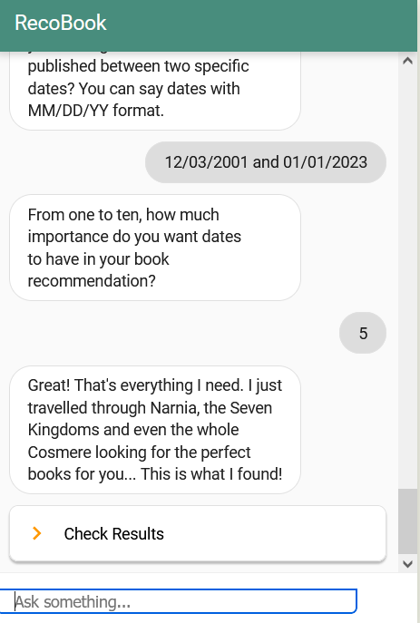
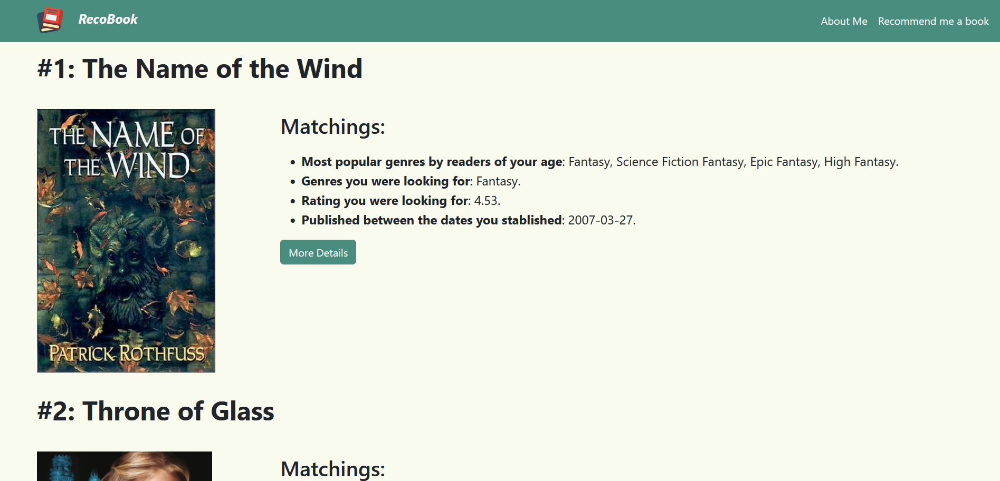
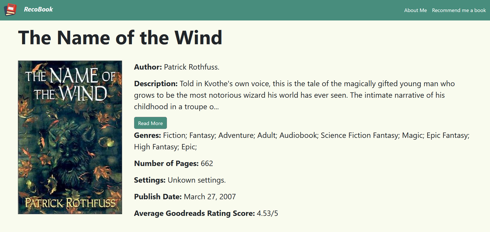
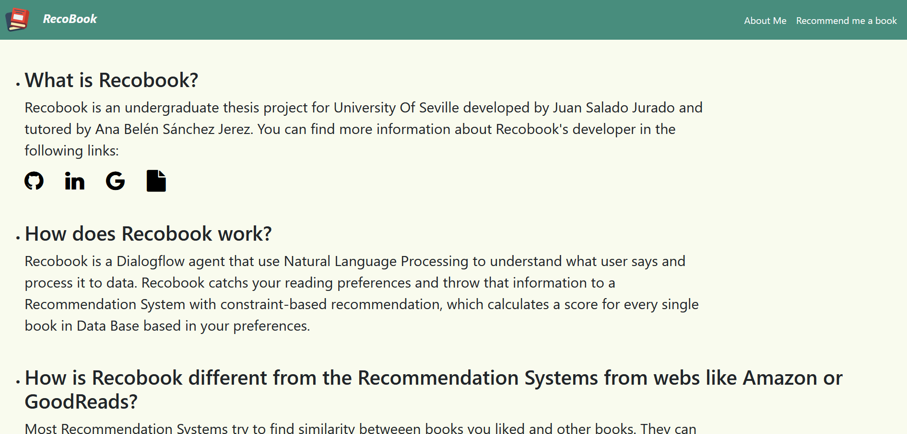
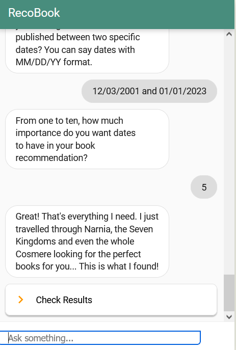
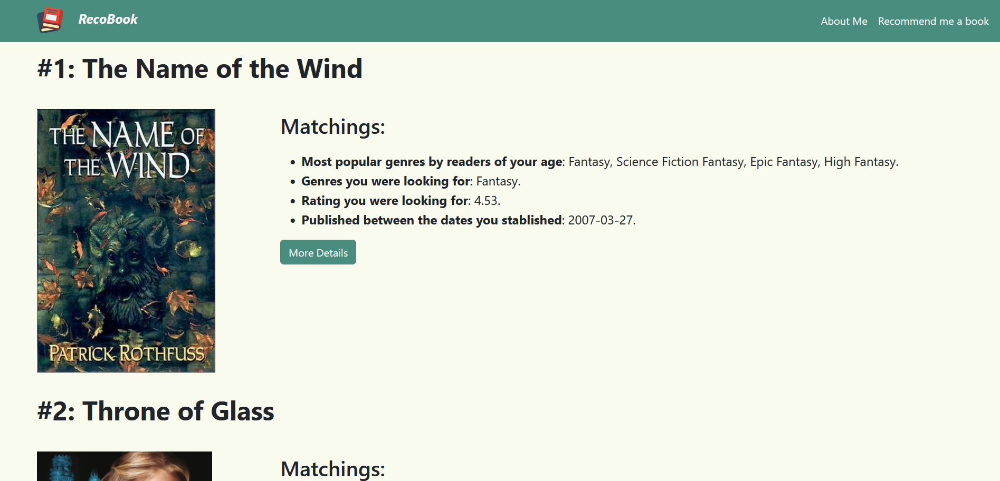
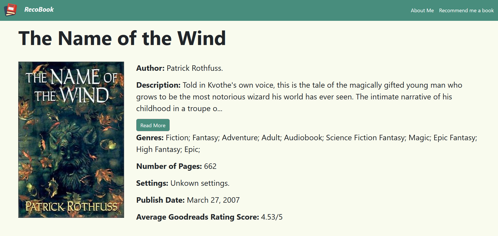
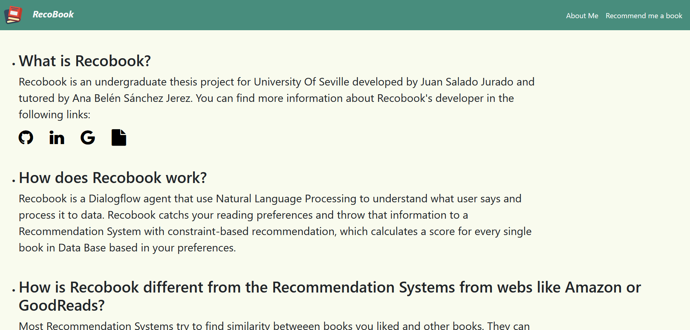

Description
Recobook is a Dialogflow agent that use Natural Language Processing to understand what user says and process it to data. Recobook catchs your reading preferences and throw that information to a Recommendation System with constraint-based recommendation, which calculates a score for every single book in Data Base based in your preferences.
To use Recobook, you just have to respond the chatbot questions as he suggest you to do. For every parameter that Recobook can scrore for you (genres, number of pages...), it will first ask you for a particular value for that parameter. For example, for genres it will ask you what genres would you want your next read to have. In this type of questions, you can always skip those questions if you don't care about a question's parameter just typing "skip". Then, whenever you are actually interested and answer a question, the chatbot will ask you a relevance number for that parameter, which must be an integer from 1 to 10. That relevance will be important to add more or less scrore to books that accomplish your parameter preference. At the end of the conversation, Recobook will provide you your recommendation results.
Details
Images
 






